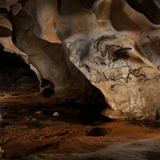
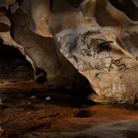

Over 40,000 years ago our ancestors painted and engraved images onto the rocky surfaces of their natural environment. These masterpieces from the Ice Age known today as Rock Art serve as our earliest form of visual communication and artistic expression.
Most famously known by the discoveries of the painted caves of Lascaux, Altamira, Chauvet and by the widely studied culture of indigenous people around the world, the origins of Rock Art are separated by thousands of miles and by thousands of years. From the dark caves to remote cliff-sides, inside monuments and contemporary street art, this brilliantly developed artistic concept remains the basis of our most popular form of visual communication to this very day.
The sheer magnitude of Rock Art caves and shelters, the length of the corridors and the volumes of paintings and engravings inscribed on the walls all play a role in the telling of the narrative that seems to have been purposely crafted with the intent of someday being discovered by future generations.
Through our exclusive access to the sites and an advanced laser scan and photographic process, The Adventure of Rock Art will showcase the world's most invaluable scenes from the "birthplace of art" through a fully immersive and multimedia exhibition allowing a sensorial, emotional, communal and educational experience of Rock Art in real dimensions.
"For tens of thousands of years, Rock Art has occupied an essential place in the history of human social life. The Adventure of Rock Art's ambition is to create and operate a traveling museum to present those inaccessible and unrevealed works of art, still embedded in the distant landscapes, hidden in the wilderness on all continents.
This singular creative proposal deserves to be ranked as one of the most important international cultural projects of the 21st century. Masterful and sacred, Rock Art is a living art with incomparable power and beauty that possesses the magic to re-enchant the world today."
— Jean-Michel Geneste, Scientific Advisor, Director of Archeological Studies at the Chauvet-Pont D'Arc cave.People heard of, know of but rarely experience Rock Art … and one of our main objectives is to give millions of people democratic and affordable access to both the scope and the cultural significance of Rock Art in today's culture. We are employing the most ethical and environmentally friendly practices in bringing to life 40,000 years of living history through shared and universal perspectives of art, science and technology.
Through my personal experience exploring Rock Art around the globe, I discovered a mental, spiritual and powerful world of artistic expression and consciousness, which revealed itself as being just like Street Art today.
The artistic concept of using our natural environment - a rocky surface or an urban wall - as canvas is quite possibly humanity's noblest and most genius thinking which 40,000 years later is still remarkably valid, alive and dynamic in modern creativity.
It's the link that these arts share with their environment that leads to unique and emotionally charged perceptions of the world.
By correlating Rock Art with Street Art as a common cultural thread between us, the exhibition will become a bridge to another realm of existence, illustrating the power and beauty of image making driven by the insatiable urge to draw and communicate that transcends time itself.
Twitter, Facebook, Google and other social media are platforms where we leave a mark "on the wall," expressing ourselves, sharing ideas and stories of the world and forging what ultimately becomes our collective memory. A social and cultural process deeply rooted in our common human history and creative legacy. Nowhere else in the world is the alliance between mankind and our urge to communicate more intense than within these Rock Art sites.
The epic works of memory that we have chosen to feature in the exhibition physically belong to the landscape of Europe, Australia, Africa, America, but what they represent belongs to all of us. They are our deepest connection to the origins of humanity, in its purest form.
However, they are not or have rarely been open to the public.
— Martin Marquet, Producer & Artistic DirectorThe Adventure of Rock Art traveling exhibition will feature an exclusive and curated collection of height spectacular UNESCO World Heritage Rock Art sites.
Using advanced and original digital assets of each of the Rock Art sites in their real dimensions, the exhibition will provide audiences with a physical and emotional experience through a uniquely immersive format that will also evoke the archeological content's relevance in contemporary society, and position the process of art making as one the most universal elements of our human identity.
Rather than relying on full-scale physical props and recreations, the visitor's experience will be as varied as the environments of the sites themselves.
The Adventure of Rock Art exhibition will stage multiple physical atmospheres, allowing each visitor to share in a sensorial experience of being transported to these exceptional destinations. In this virtual world, visitors will be plunged into the darkness of a cave, elevated beneath the shadow of a rock shelter, and released into the light of day, at the foot of a cliff.
The Adventure of Rock Art is the first international and family friendly event connecting over a century of archeological research and Rock Art knowledge to a global and curious audience increasingly demanding more meaningful and truthful storytelling.
"Rock Art connects us to the broad spectrum and history of humanity. In Rock Art we find the same desire to share and communicate as with the artist and designer's work that we know today. In our work now in virtual, augmented, and mixed reality we can sense how Rock Art's methods connect to new forms of sharing and communication. Our particular fascination with The Adventure of Rock Art project is how it exposes people to a rarely experienced art that quickly becomes contemporary and meaningful in their lives."
— Joshua Walton & James Tichenor, Microsoft HoloLens Lead DesignersIn late 2016, The Adventure of Rock Art production team partnered with the National School of Architecture in Nantes, France on an educational initiative addressed to college seniors completing their final year in architectural and design studies. The collaboration consisted in a mentorship program during which the students, along with the support of a group of undergraduates, conceptualized and designed eight original mobile museum platforms specifically developed for the The Adventure of Rock Art exhibition. Focusing on the cultural, creative and technical specifications imposed by the project, each senior presented their final designs in February 2017.
Conceived by Victor Yvin, the Erodor was the most remarkable end product of that collaboration which granted Yvin his official diploma in architecture as well as an invitation to join the The Adventure of Rock Art team in Los Angeles.
Along with his university classmate Pacôme Gérard who also earned his diploma at the same school, Yvin spent two months building the scale model prototype of the Erodor in our Downtown L.A. warehouse and worked closely with the The Adventure of Rock Art design team on a number of visual and virtual experiments projecting the project's Rock Art content and other 360 type videos for the Erodor's fully immersive platform.
The Erodor is a design and architectural proposal perfectly suited for The Adventure of Rock Art project which aims to, as faithfully as possible, convey the deep emotions that these works of art elicit in those who have had the privilege of discovering them in their authentic natural setting. As we will invite people to enter a fully immersive and multisensory space - where sound, smell and temperatures are controlled to imitate those authentic natural settings - it will allow for their own natural and emotional phenomena to unfold.
Creating cinematic narratives of Rock Art from all five continents where the art can be seen, The Erodor offers the extraordinary potential for visitors to experience, together, a faithful and powerful visualisation of the Rock Art sites.
With guidance from local storytellers, the visitors will have a chance to suspend their present lives, travel to a distant space and time, and transition to a complete state of discovery and amazement.
At any moment during the visit, a single aspect of the immersive experience may trigger an emotional response, feeding the visitors' understanding and appreciation of the spiritual energy that went into creating Rock Art thousands of years ago.
With 360 type produced content projected on all screens of The Erodor platform, the immersive and experiential possibilities become endless, empowered by an imperative dominating The Adventure of Rock Art exhibition's curated program: operating an international exhibition providing audiences with meaningful content presented in a spatial narrative that will truthfully respect and reflect the thoughtfulness with which it was created.
"As young architects, we are fascinated by the way these manmade symbols and representations of life relate to their respective environments. Forming itself using the natural shape of the rock surface and revealing themselves progressively as we enter the darkness of a painted cave, Rock Art seems to indicate that early on, we approached the space around us understanding how it can modify and empower the way we perceive things. Rock Art leads us to places we didn't even know about, where time, light and sound take on new dimensions."
— Victor Yvin & Pacôme Gérard
The works of Rock Art selected for the exhibition belong to archeological sites located in a few European countries, in Australia, Africa, Asia and America. However, they all belong to our common, universal heritage, which brings us back to the origins of our humanity in its noblest form. A criteria for UNESCO which granted each site included in our exhibition program the World Class Heritage status.
Beginning with the Rock Art sites themselves, the innovative 3D reproduction technique used for this exhibition reflects the ambitious aim of this project: to take the visitor back in space and time, from the painted caves of Europe, over 35,000 thousands years old, to the rock shelters of America, South Africa and Australia where indigenous people continued to paint until only recently.
Each painting or engraving, ranging in approximate average size from 10 to 20 meters wide and up to five meters tall, requires five to eight days of 3D recording, 10 to 20 days of shooting and up to two months of computer editing. The average 5x5 meter panel requires a minimum of 2,000 individual shots, which are then assembled digitally. This is an incredibly tedious process, which produces an unparalleled ultra-realistic visual and immersive experience for the viewer, both in resolution and size.
The scenography conceptualized for this exhibition will use the latest in digital technology to recreate an environment where multiple physical atmospheres can unfold, allowing each visitor to share in a fully sensorial experience of being transported to these exceptional and unique sites of humanity.
In Europe, where the most ancient Rock Art sites known to this day are located, dating back to the Ice Age period named Upper Paleolithic approximately from 40,000 to 12,000 years ago, the exhibited sites are chosen for their antiquity and for the specificity of indoor cave art such as the famous caves of Lascaux, and Chauvet (France), Altamira and La Pasiega (Spain). In Portugal , Foz Coa is a concentration of open air sites with engravings in the Douro Valley.
Rock Art is abundant and famous in the whole African continent. There are paintings and engravings in an extraordinary number of well known and documented sites in Northern Africa, especially in the Saharan region, with very rich regional groupings in the mountain ranges of Tassili des Ajjer, Messac and Acacus, Tibesti, Adrar des Iforas and the Aïr Mountains. Rock Art is also omnipresent in Central and Eastern Africa but the most incredible concentrations of African Rock Art lie in Southern Africa, in the Tsodilo Hills (Botswana), and in the mountain ranges of Brandberg (Namibia), Cederberg and Drakensberg (South Africa) and Lesotho painted rock shelters. A portion of this art has been linked back to cultures of hunter-gatherer societies from the Kalahari to the Cape of Good Hope. The site of Game Pass Shelter in South Africa, among the African sites we aim to represent, was subject to the first studies, which resulted in a shamanist interpretation of Rock Art by the ancient San hunters, known for their relatively abundant ethnological documentation.
In Eurasia, India and China Rock Art is abundant, especially at the Huashan cliffs (Southern China) for example. It has endured from the Upper Paleolithic period in the Altaï Mountains (Russia and Mongolia) through more recent periods as Bronze or Iron Age, and features great regional specificities.
In Southern Asia, cave art is well known and ancient in Papua New Guinea as well as in Indonesia, such as in the Borneo and Sulawesi where motifs of painted hands and animals dating back to 29,000 years can be found. Rock Art is very rich and well known there, it is studied and protected throughout the Australian continent, and thus has become one of its cultural specificities. Its study has benefited from documentation and knowledge accumulated from the lifestyle and cultural practices of aboriginal tribes, which have caught the attention of social anthropologists for over a century of involvement in their cultural heritage.
Australian Rock Art is also very carefully guarded and protected. Australian indigenous populations, who claim part of its original spirituality as their own, reinvest it in their cultural life. Among the sites subject to long-standing research programs, there's the deep rock shelter of Nawarla Gabarnmang in the Arnhem Land in the Jawoyn territory, known for the richness and originality of its monumental polychromatic ceiling. It was occupied approximately 45,000 years ago. Another spectacular figure symbolic of Australian Rock Art can be found as part of the Namarali site in the North East Kimberley.
On the American continent, from the Great Plains of North America to Southern California and all of South America, from Brazil to Peru, Chili and Argentina, remarkable groupings of sites can be visited and are the subject of research. They feature a great diversity of cultures and periods. The selection of one of those sites, whether it is a painted wall in the Sierra de San Francisco in Baja California (Mexico) or the Cueva de los Manos in Argentina, are crucial and will represent only one aspect of the richness of Rock Art on this continent.
The Adventure of Rock Art is a reflection of our own contemporary lives witnessing the past and present and creating something new for a future that we won't belong to, but its meaning will stand the test of time.
The exhibition will mark for our visitors and future generations one of the most extraordinary and memorable feelings of discovery, beauty and existence … a time for everyone to connect on something truly universal in a particularly dividing and divided world of politics, social injustices and cultural dissonance.
The Adventure of Rock Art represents over 8 years of creative and operational development, from introducing the original exhibition and mobile museum proposal to key rock art officials, caretakers and communities, to the building of a multidisciplinary team of producers, scientists, archeologists, designers and engineers. Rights to reproduce and promote the rock art sites in the international traveling exhibition have been secured and the design team members are working on the final year of development ahead of a full year of production scheduled for 2018/19.
The Adventure of Rock Art will be completed in three final phases of development and production
Final designs and developments of the Erodor's experience platform and exhibit systems
Erodor Build – simultaneously to on-going data recording in the rock art field and additional exhibition content production
Worldwide Deployment and Management
The Adventure of Rock Art will launch in 2020.


 
